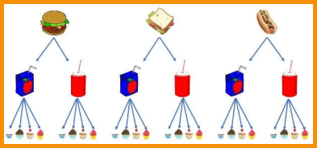
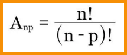

.png)
ANÁLISE COMBINATÓRIA
A análise combinatória ou combinatória é a parte da Matemática que estuda métodos e técnicas que
permitem resolver problemas relacionados com contagem.
Muito utilizada nos estudos sobre probabilidade, ela faz a análise das possibilidades e das
combinações possíveis entre um conjunto de elementos.
PRINCÍPIO FUNDAMENTAL
O princípio fundamental da contagem, também chamado de princípio multiplicativo, postula que:
“Quando um evento é composto por n etapas sucessivas e independentes, de tal modo que as
possibilidades da primeira etapa é x e as possibilidades da segunda etapa é y, resulta no número
total de possibilidades de o evento ocorrer, dado pelo produto (x) . (y).”
Em resumo, no princípio fundamental da contagem, multiplica-se o número de opções entre as escolhas
que lhe são apresentadas.
Exemplo:
Uma lanchonete vende uma promoção de lanche a um preço único. No lanche, estão incluídos um sanduíche, uma bebida e uma sobremesa. São oferecidas três opções de sanduíches: ham- búrguer especial, sanduíche vegetariano e cachorro-quente completo. Como opção de bebida, pode-se escolher 2 tipos: suco de maçã ou guaraná. Para a sobremesa, existem quatro opções: cupcake de cereja, cupcake de chocolate, cupcake de morango e cupcake de baunilha. Conside- rando todas as opções oferecidas, de quantas maneiras um cliente pode escolher o seu lanche.
 Solução
Solução
Podemos começar a resolução do problema apresentado construindo uma árvore de possibilidades, conforme ilustrado abaixo:
Acompanhando o diagrama, podemos diretamente contar quantos tipos diferentes de lanches podemos
escolher. Assim, identificamos que existem 24 combinações possíveis.
Podemos ainda resolver o problema usando o princípio multiplicativo. Para determinar as
diferentes possibilidades de lanches, basta multiplicar o número de opções de sanduíches,
bebidas e sobremesa.
Total de possibilidades: 3.2.4 = 24
Portanto, temos 24 tipos diferentes de lanches para escolher na promoção.
O princípio fundamental da contagem pode ser usado na maioria dos problemas relacionados com
contagem. Entretanto, em algumas situações seu uso torna a resolução muito trabalhosa.
Desta maneira, usamos algumas técnicas para resolver problemas com determinadas características.
Basicamente há três tipos de agrupamentos: arranjos, combinações e permutações.
Antes de conhecermos melhor esses procedimentos de cálculo, precisamos definir uma ferramenta muito
utilizada em problemas de contagem, o fatorial.
O fatorial de um número natural é definido como o produto deste número por todos os seus
antecessores. Utilizamos o símbolo fatorial para indicar o fatorial de um número.
Define-se ainda que o fatorial de zero é igual a 1.
Exemplo:
O! = 1
1! = 1
3! = 3.2.1 = 6
7! = 7.6.5.4.3.2.1 = 5 040
10! = 10.9.8.7.6.5.4.3.2.1 = 3 628 800
ote que o valor do fatorial cresce rapidamente, conforme cresce o número. Então, frequentemente
usamos simplificações para efetuar os cálculos de análise combinatória.
Nos arranjos, os agrupamentos dos elementos dependem da ordem e da natureza dos mesmos. Para obter o arranjo simples de n elementos tomados, p a p (p ≤ n), utiliza-se a seguinte expressão:

Como exemplo de arranjo, podemos pensar na votação para escolher um representante e um
vice-representante de uma turma, com 20 alunos. Sendo que o mais votado será o representante e o
segundo mais votado o vice-representante.
Dessa forma, de quantas maneiras distintas a escolha poderá ser feita? Observe que nesse caso, a
ordem é importante, visto que altera o resultado
As permutações são agrupamentos ordenados, onde o número de elementos (n) do agrupamento é igual ao
número de elementos disponíveis.
Note que a permutação é um caso especial de arranjo, quando o número de elementos é igual ao número
de agrupamentos. Desta maneira, o denominador na fórmula do arranjo é igual a 1 na permutação.
Assim a permutação é expressa pela fórmula:
Para exemplificar, vamos pensar de quantas maneiras diferentes 6 pessoas podem se sentar em um banco
com 6 lugares.
Como a ordem em que irão se sentar é importante e o número de lugares é igual ao número de pessoas,
iremos usar a permutação:
Logo, existem 720 maneiras diferentes para as 6 pessoas sentarem neste banco.
As combinações são subconjuntos onde a ordem dos elementos não é importante, entretanto, são
caracterizadas pela natureza dos mesmos.
Assim, para calcular uma combinação simples de n elementos tomados p a p (p ≤ n), utiliza-se a
seguinte expressão
A fim de exemplificar, podemos pensar na escolha de 3 membros para formar uma comissão organizadora
de um evento, dentre as 10 pessoas que se candidataram.
De quantas maneiras distintas essa comissão poderá ser formada?
Note que, ao contrário dos arranjos, nas combinações a ordem dos elementos não é relevante. Isso
quer dizer que escolher: Maria, João e José, é equivalente a escolher: João, José e Maria.
Observe que para simplificar os cálculos, transformamos o fatorial de 10 em produto, mas conservamos
o fatorial de 7, pois, desta forma, foi possível simplificar com o fatorial de 7 do denominador.
Assim, existem 120 maneiras distintas formar a comissão.
Para melhorar seus estudos...
Matemática pode ser um conteúdo difícil. Para aumentar seu aprendizado, acesse ao mapa mental e a playlist de vídeo aulas sobre este assunto:
Mapa mental playlist de videoaulas